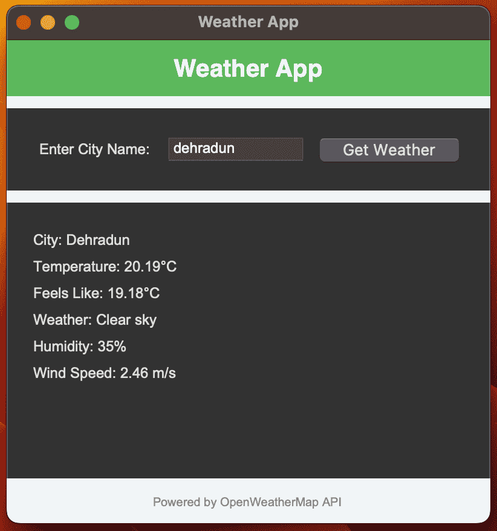
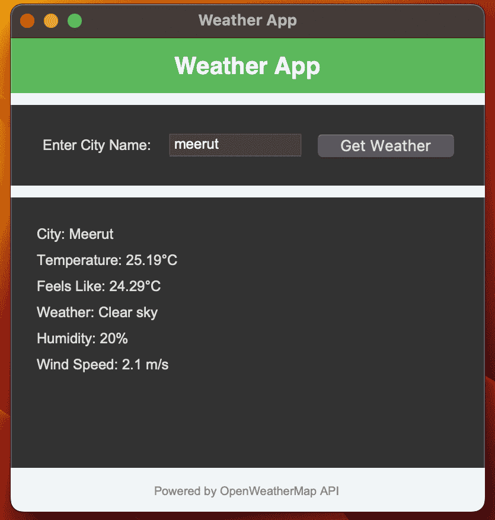
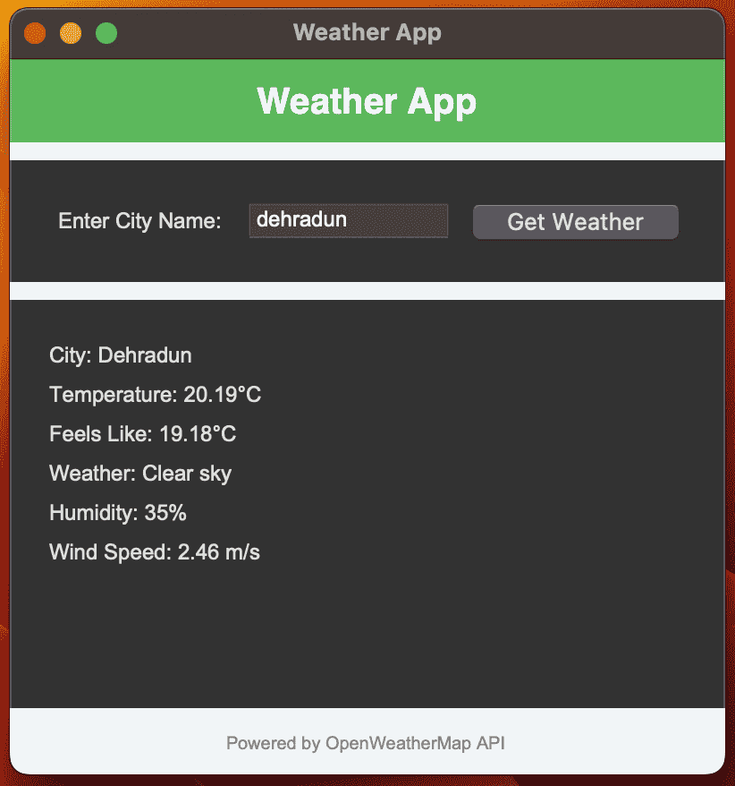
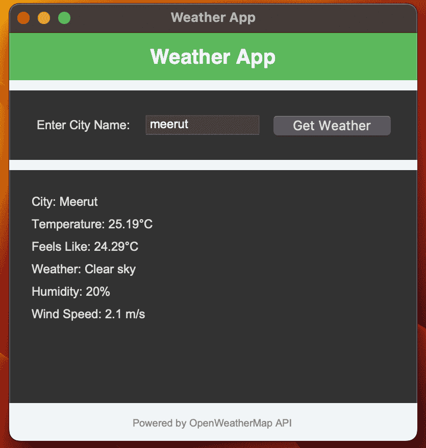

Weather App
Welcome to the Weather App. This Python-based application fetches real-time weather details for any city using the OpenWeatherMap API.
How to Use the Application
- Clone the repository:
git clone https://github.com/RachitTyagi17/Weather_App.git - Navigate to the project directory:
cd Weather_App - Install the required dependencies:
pip install requests - Replace `YOUR_API_KEY` in `weather_app.py` with your OpenWeatherMap API key.
- Run the application:
python weather_app.py
Screenshots
 




Project Repository
The source code for this project is available on GitHub. Click the link below to view the repository: Weather App Repository